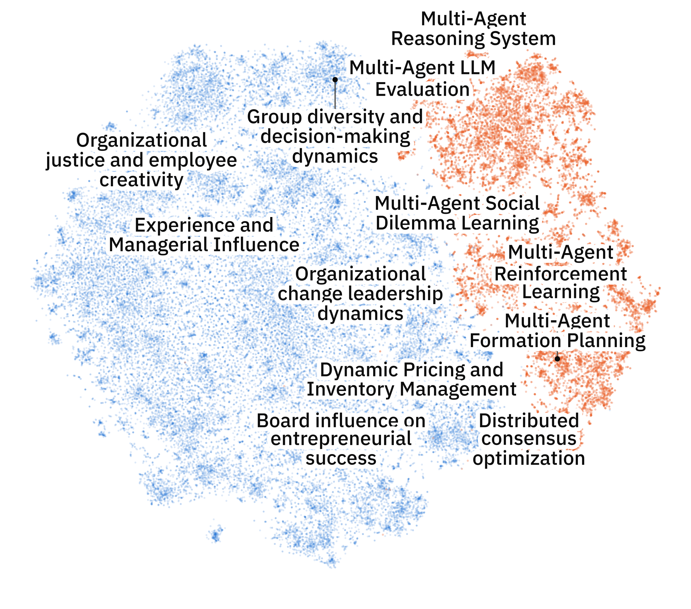

CCS 2026 · Poster #247
Mapping AI and Management Science via Embedding Space Alignment
1Systems Science and Industrial Engineering, Binghamton University · 2School of Management, Binghamton University · 3IBM T. J. Watson Research Center
Are we reinventing teams?
Doc2LoRA turns each paper into a LoRA adapter, so every point in the embedding space is an LLM you can ask. We place 52,527 management papers and 18,109 multi-agent AI papers in one space, and ask the sparse regions of multi-agent AI research what could be there. Management papers do not fill the holes we found. The next step is to align the two literatures and test again.
The poster is presented at the 2026 Conference on Complex Systems in Binghamton, NY, on October 14 and 15, 2026 (board 14, Group 2, 12:00 to 1:30 pm EDT).
Poster
Download the poster (PDF, 36 × 48 in)
Map of the two literatures
Open the interactive map: all 70,636 papers, searchable by title. Click a paper to see its details. The default view is the poster map. A switch in the View panel shows a rebuilt map in which both fields are embedded from title and abstract, and a version in which each field is also shifted to a common mean.
Static version: t-SNE of both corpora in the Doc2LoRA space, with region names answered by the LLM at each region's average. Vector version (SVG).


Code
The Doc2LoRA method, code and results are in the reproduction repository, with the Doc2LoRA project page.
Contact: Sadamori Kojaku, Binghamton University.